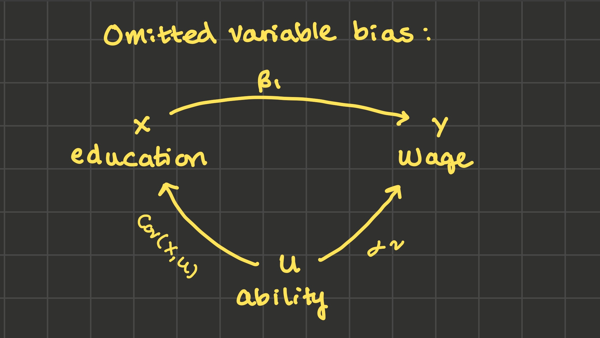

4 Consistency
4.1 Overview
What to expect in this chapter:
- Section 4.2 builds some motivation for when you’d need to use the concept of consistency.
Definition. An estimator \(\hat{\beta_1}\) is consistent if \(plim(\hat{\beta_1}) = \beta_1\). That is, \(\hat{\beta_1}\) is consistent if it converges in probability to the true value \(\beta_1\) as \(n\), the number of data points, goes to infinity.
In section 4.3, I discuss the differences between the concepts of biasedness and consistency.
In section 4.4, I provide some rules for the plim operator and I prove that \(\hat{\beta_1}\) is consistent when \(Cov(x_i, u_i) = 0\).
Definition: Probability Limit plim. For a sequence of random variables \(x_n\) and some value \(x\), \(plim(x_n) = x\) if, as \(n\) goes to infinity, the probability distribution of \(x_n\) collapses to a spike on the value \(x\).
4.2 Motivation
Let’s fast forward a few years. You’re at your future job in a brand new data science department at a fast growing company. You’re in a meeting and you decide to bring up some concerns you have about selection bias in a model you’re developing. Your coworker is dismissive though: they say, “don’t worry about selection bias, we’ll just get twice the amount of data! How much data do you want? 4 times the amount of data? 10 times?”
You’ll have to remember back to econometrics: does selection bias disappear when we let \(n\) go to infinity? That is, under selection bias, is OLS consistent? That is the research question for today. (spoiler: the answer is no: no amount of data will help if there is selection bias or omitted variable bias. The only solution is to use causal inference techniques like an RCT, instrumental variables (Ch 9), of differences-in-differences (Ch 10).)
4.3 Bias versus Consistency
Recall that \(\hat{\beta_1}\) is unbiased iff \(E[\hat{\beta_1}] = \beta_1\), and that the key assumption for unbiasedness is exogeneity: \(E[u_i | X] = 0\).
For \(\hat{\beta_1}\) to be consistent however, we need \(plim(\hat{\beta_1}) = \beta_1\). That is, as the number of data points \(n\) goes to infinity, the probability density function for \(\hat{\beta_1}\) must collapse to a spike on the true value \(\beta_1\) for \(\hat{\beta_1}\) to be consistent. “Collapse to a spike” more formally means that \(Var(\hat{\beta_1})\) goes to 0 as n goes to infinity and if \(\hat{\beta_1}\) is biased, its bias goes to 0 as n goes to infinity. I’ll show at the end of the chapter that the key assumption required for \(\hat{\beta_1}\) to be consistent is that \(Cov(x, u) = 0\).
Bias versus Consistency
Estimators that are consistent and inconsistent; biased and unbiased
Quiz: bias and consistency
4.4 Proof: \(\hat{\beta_1}\) is consistent if \(Cov(x, u) = 0\)
Consistency is defined as \(plim(\hat{\beta_1}) = 0\), so to do this proof, first we need some rules about probability limits \(plim\).
4.4.1 \(plim\) rules
Let \(c\) be a constant. Let \(x_n\) and \(y_n\) be sequences of random variables where \(plim(x_n) = x\) and \(plim(y_n) = y\). That is, for large x, the probability density function of \(x_n\) collapses to a spike on the value x and the same for \(y_n\) and y. Then:
- The probability limit of a constant is the constant: \(plim(c) = c\)
- \(plim(x_n + y_n) = x + y\)
- \(plim(x_n y_n) = x y\)
- \(plim(\frac{x_n}{y_n}) = \frac{x}{y}\)
- \(plim(g(x_n, y_n)) = g(x, y)\) for any function g.
4.4.2 Proof
We’d like to show that \(plim(\hat{\beta_1}) = \beta_1\) if \(Cov(x, u) = 0\).
I’ll start with this formula for \(\hat{\beta_1}\), where \(sCov\) and \(sVar\) refer to the sample covariance and sample variance:
\[\hat{\beta_1} = \frac{sCov(x_i, y_i)}{sVar(x_i)}\]
If \(y_i = \beta_0 + \beta_1 x_i + u_i\), we can substitute in for \(y_i\):
\[\hat{\beta_1} = \frac{sCov(x_i, \beta_0 + \beta_1 x_i + u_i)}{sVar(x_i)}\]
And use some covariance rules to simplify:
\[\hat{\beta_1} = \beta_1 + \frac{sCov(x_i, u_i)}{sVar(x_i)}\]
Take the probability limit of both sides and recognize that the probability limit of a constant is the constant:
\[plim(\hat{\beta_1}) = \beta_1 + plim \left ( \frac{sCov(x_i, u_i)}{sVar(x_i)} \right )\]
Since \(plim(\frac{x_n}{y_n}) = \frac{x}{y}\):
\[plim(\hat{\beta_1}) = \beta_1 + \frac{plim(sCov(x_i, u_i))}{plim(sVar(x_i))}\]
As n increases, a sample variance collapses to the population variance, and the same for covariance:
\[plim(\hat{\beta_1}) = \beta_1 + \frac{Cov(x_i, u_i)}{Var(x_i)}\]
So for \(plim(\hat{\beta_1})\) to be equal to \(\beta_1\), we just need \(Cov(x_i, u_i)\) to be 0.
4.5 \(Cov(x_i, u_i) \neq 0\) under omitted variable bias
Suppose the true data generating process is this:
\[wage_i = \alpha_0 + \alpha_1 education_i + \alpha_2 ability_i + v_i\]
But we have to omit \(ability\), so we fit this model instead:
\[wage_i = \beta_0 + \beta_1 education_i + u_i\]
Then u absorbs v and \(\alpha_2 ability_i\), so that \(u_i = \alpha_2 ability_i + v_i\). So:
\[\hat{\beta_1} = \beta_1 + \frac{sCov(education_i, u_i)}{sVar(education_i)}\]
And taking probability limits of both sides while substituting in for \(u_i\):
\[plim(\hat{\beta_1}) = \beta_1 + \frac{Cov(education_i, \alpha_2 ability_i + v_i)}{sVar(education_i)}\]
\[\begin{align*} plim(\hat{\beta_1}) = \beta_1 + \frac{\alpha_2 Cov(education_i, ability_i) + Cov(education_i, v_i)}{Var(education_i)} \end{align*}\]
Assuming \(Cov(education_i, v_i) = 0\):
\[ plim(\hat{\beta_1}) = \beta_1 + \frac{\alpha_2 Cov(education_i, ability_i)}{Var(education_i)} \tag{4.1}\]
Compare this to the omitted variable bias diagram:

In the last chapter we learned that if you can draw both lines going out from u (if you can tell stories about why x and u are likely related and why u and y are likely related), then u confounds the relationship you’re trying to detect between x and y, and \(\hat{\beta_1}\) is likely biased.
Now I’ve added one more detail to the diagram: we can label those lines. Specifically, the relationship between x and u is \(Cov(x_i, u_i)\) and the relationship between y and u is \(\alpha_2\) from Equation 4.1. And if both \(Cov(x_i, u_i)\) and \(\alpha_2\) are nonzero, both the diagram and Equation 4.1 verify that \(\hat{\beta_1}\) will be biased.
4.6 Signing the bias
Labeling the lines in the diagram above does one more thing for us: it lets us sign the bias.
4.7 Exercises
4.8 References
Dougherty (2016) pages 68-75
Rubin (2022)